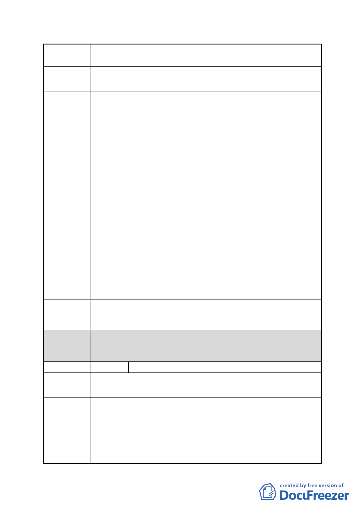

案名
擬定臺北市南港區鐵路地下化沿線土地細部計畫案
食，市府落得圖利財團之嫌。
建議辦法
市府回應
說明
1.依據 貴會「修訂台北市主要計畫商業區（通盤檢討）計畫
案」內有關商業區變更回饋相關規定案。明文規定：爲配合
重大政策及產業發展需要，得視個案需要循都市計畫程序，
經臺北市都市計畫委員會同意後，免予回饋。故在此請求本
區免予回饋。
2.本區未來變更為商業區，使用強度與第三種商業區一樣。加
上其後方只隔 20 米計劃道路，僅一路之隔，土地為第三種
商業區，容積為 560％。但為何本區基準容積僅 255％？在
此請求比照第三種商業區容 560％為基本要求。
另為避免 貴會圖利財團之嫌及小地主被大財團吞食之惡，
本區全體住戶、地主要求規模獎勵部分，最小建築面積，一
樣給予基準容積 15％獎勵。
3.全體住戶要求建蔽率提升 65％以上，以求住戶未來之舒適空
間。
4.此次公聽會，與會立委 蔡正元等，議員李彥秀等，亦贊同
並支持上述請求。故本區住戶之請求當為合情、合理、合法，
懇請 貴會順應民情，謀求全體住戶居住之舒適。
5.懇請同意上述基本要求，全體住戶一定配合國家重大建設及
整體發展。
同編號 7。
都委會 1.本陳情地點非屬修正後細部計畫範圍。
決議 2.同意以市府回應說明辦理。
編號
陳情地點
陳情理由
9 陳情人 板信商業銀行股份有限公司、張高祥
南港路二段 23 巷（南港區南港段四小段 414、414-2、415、
415-1、415-2 地號）
1.依民國 98 年 12 月 10 日公開展覽說明會內容，「規模獎勵最
高額度 15％，採全街廓開發或申請合併建築面積大於 8000 平
方公尺以上者，給予基準容積 15％獎勵」，基地面積需整合達
8000 平方公尺，執行上需財力雄厚之財團方可辦到，有圖利
大財團之嫌。
2.本地區現況停車空間不足，希望能協助解決停車問題。
- 23 -